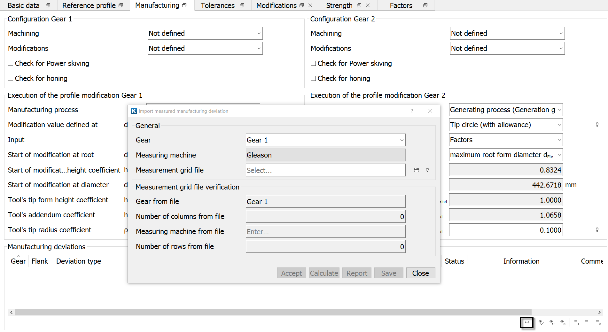
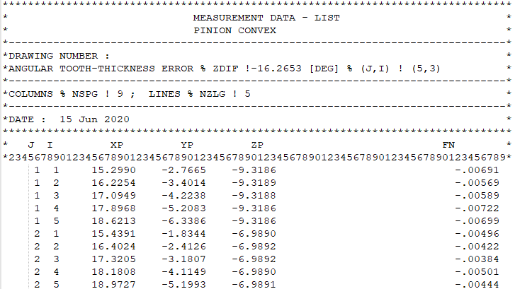
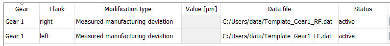

|
|
|


实测制造偏差
使用 可直接导入 Gleason GAMA CMM 数据，并将其转换为 KISSsoft 中用于拓扑修形的格式。因此，用于实测制造偏差修形的模板格式与拓扑修形的模板相同。假设模板中的值以微米为单位给出。要显示修形，请点击 。
通过定义修形，您可以分析制造偏差对齿轮性能、传动误差、接触应力和其他性能的影响。此功能在 设计 - 制造 - 测量闭环 中至关重要，因为它能确保所制造的齿轮具有所需的性能。
修形也可以手动定义，但我们建议您在 中定义它，该选项位于 选项卡。点击转换按钮以打开此对话框。

图 15.60：导入实测制造偏差
带有制造偏差的 CMM 数据在窗口中进行分配。目前仅支持 Gleason GAMA 数据格式。此处的制造偏差数据应采用与 FN 列中显示相同的格式。

图 15.61：Gleason GAMA CMM 数据
分配文件后，点击 和 按钮，将模板文件保存到正确的文件夹。保存文件后，点击 按钮。程序随后会自动生成修形条目，如下所示。

图 15.62：输入实测制造偏差
Measured manufacturing deviation
Use the to import Gleason GAMA CMM data directly and convert it to the format used for topological modifications in KISSsoft. As a result, the template format for the modification to the measured manufacturing deviation is the same as the template for the topological modifications. It is assumed that the values in the template are given in micrometers. To display the modifications, click on .
By defining the modification, you can then analyze how manufacturing deviation affects gear performance, transmission error, contact stress and other properties. This functionality is essential in the Design - Manufacturing - Measuring Closed Loop because it ensures that the manufactured gears have the required properties.
The modification can also be defined manually, but instead, we recommend you do define it in the in the tab. Click on the Convert button to open this dialog.
Figure 15.60: Importing the measured manufacturing deviation
The CMM data with the manufacturing deviation is assigned in the window. At present, only the Gleason GAMA data format is supported. The manufacturing deviation data here should be in the same format as displayed in the FN column.
Figure 15.61: Gleason GAMA CMM data
After you have assigned the file, click on the and buttons to save the template files to the correct folder. After you have saved the file, click on the button. The program then automatically generates the modifications entry, as shown below.
Figure 15.62: Inputting the measured manufacturing deviation